使用Laravel來開發一個圖書借閱歸還管理系統。因剛學了Laravel，來測試學完Laravel的熟悉度。 跟CodeIgniter比較起來Laravel，Laravel學習曲線長， Laravel具有驗證，路由，Session，緩存，資料庫遷移，單元測試常用的工具和功能。 Laravel框架有一個特點，就是所有的URL存取都必須事先定好路由規則。
Laravel是MVC分層架構，這跟CodeIgniter是一樣， 來搞一些不一樣的，在MVC三層中再增加兩層，分別是Repository層與Service層。 把資料從Controller層抽離出來，Controller層只做轉發與接收的動作。 Service層處理商業邏輯，Injection Controller層。 Repository層處理資料庫邏輯，Injection Service層。 Model層是資料表的對應欄位，Injection Repository層。
登入頁
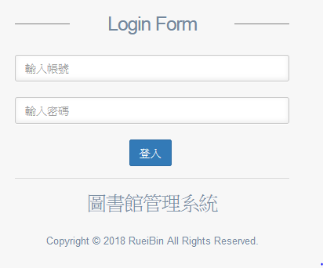
首頁
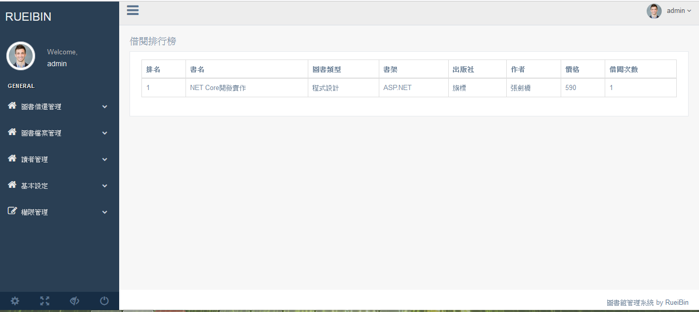
權限設定
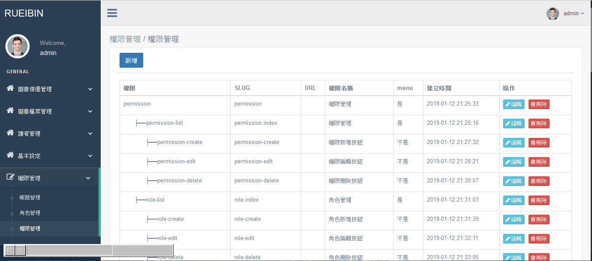
角色設定
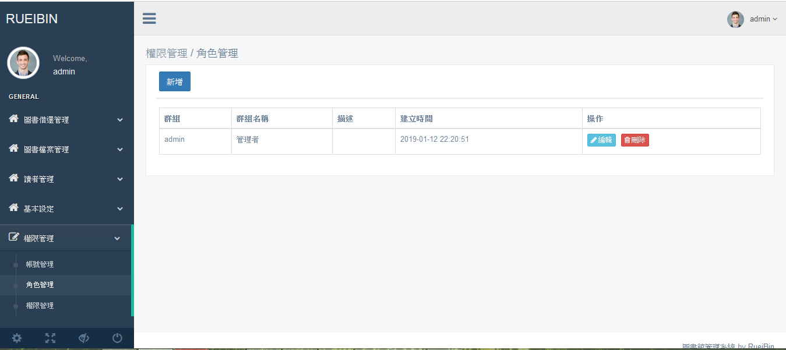
帳號設定
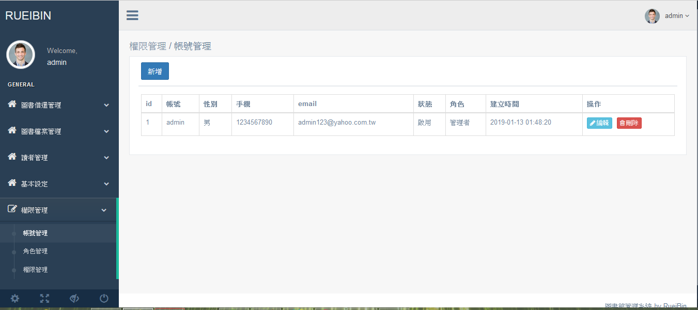
書架設定
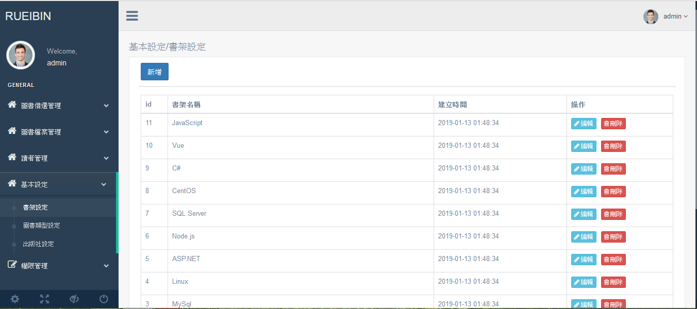
圖書類型設定
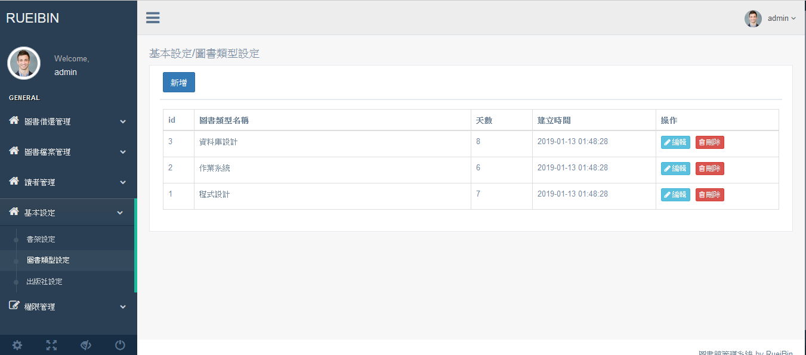
出版社設定
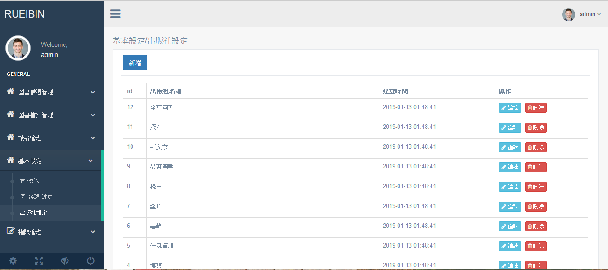
圖書檔案管理
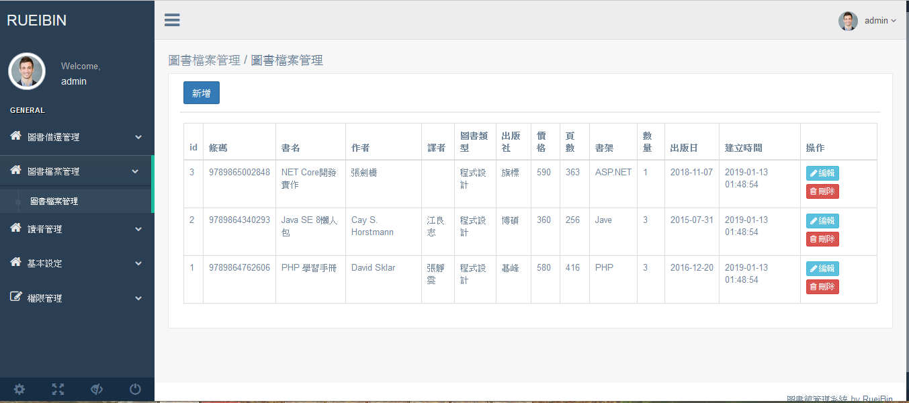
讀者管理
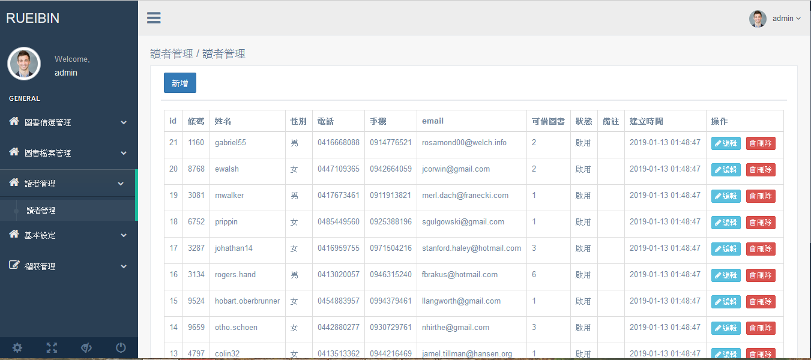
圖書借閱
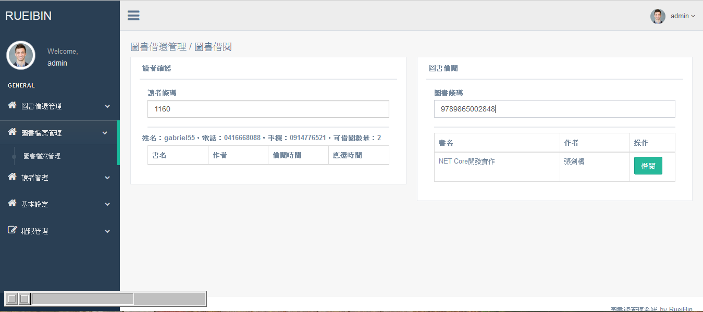
圖書歸還
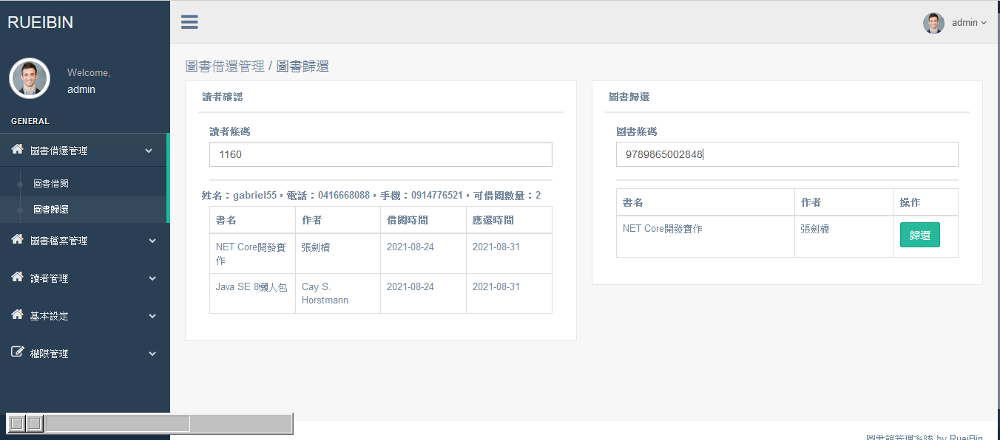